Общее описание
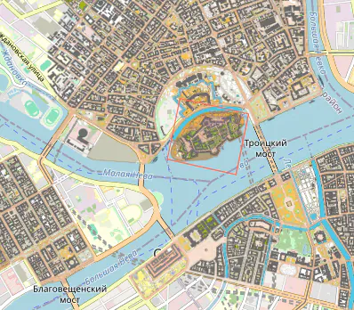
O-Maps - это сайт-каталог спортивных карт (ориентирование, рогейн, охота на лис, туризм...).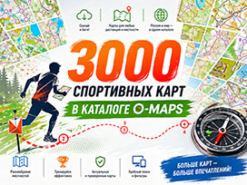
Здесь представлены более трёх тысяч карт разных авторов, мест, типов и годов издания. В каталоге выделены семь регионов - Санкт-Петербург, Москва, Башкортостан, Псков, Рязань, Самара и отчасти Белград. Карты всех регионов (включая карты за их пределами) можно посмотреть на одной общей странице.Каталог позволяет решать три основные задачи:
- Карты для соревнований и тренировок - достаточно свежие, актуальные, с доступными полноразмерными изображениями для печати или с указанием правообладателя, у которого карту можно арендовать.
- Карты различных годов и авторов в одних и тех же местах - от 50-летней давности до самых свежих. Позволяет наблюдать развитие картографии.
- Архив (музей) - старые карты или уже не актуальные из-за сильного изменения местности.
Отдельный раздел - "Старты на карте", где хронологически собраны районы и дистанции многодневок (Невский Азимут, Яркий Мир, ККП, Мемориал Михаила Святкина, Белые Ночи, Карельские скалы, Вачский азимут) и серий стартов (Спринт-Тур, Зелёный Змей, Ориентирование в школу, ретро-старты ОРИЕНТИР и 2х2, Bike/Trail Adventure, Марш-Бросок, RFAR, 100х24, ККМ, БНО, Компот-рогейн, Ночная ПРАгулка). О соревнованиях есть и другие страницы - сводная таблица стартов, диаграмма соревнований по годам и подборки чемпионатов (см. "Соревнования").
Вся информация о картах собрана в сводные таблицы - СПб, Москва, Башкортостан, Псков, Рязань, Самара, Белград и общая. А тут - сводная таблица авторов-составителей карт.
Помимо самих карт, есть и разнообразная статистика - СПб, Москва, Башкортостан, Псков, Рязань, Самара, Белград и общая.
Немного особняком стоят календари соревнований - Санкт-Петербурга, Москвы, Самары, главных стартов и лыжных гонок. Календарём Петербурга можно пользоваться и в Android-приложении. А в разделе "Маршруты" собраны интересные пешие, беговые, вело-, лыжные и водные маршруты Санкт-Петербурга и окрестностей.
Все карты в каталоге доступны для некоммерческого использования, если в их описании не указано обратное. Для проведения соревнований и получения качественных карт-материалов обращайтесь к их владельцам, имена и координаты которых везде по возможности указаны. Вся информация о правообладателях карт записана со слов, и она не может быть использована никаким образом для доказательства прав собственности.
При желании Вы можете интегрировать O-Maps в свой сайт. Разъяснительная страничка находится тут. А тут можно посмотреть рекламные баннеры O-Maps.
Общие элементы интерфейса
Главная страница и страницы регионов
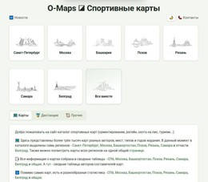 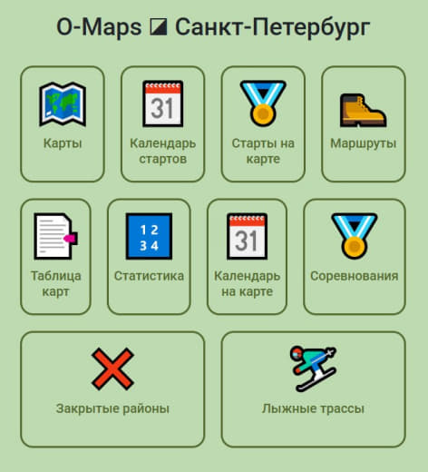
В верхней строке главной страницы - ссылки на новости и контакты, а также переключатель темы.
Глобальное меню и кнопки заголовка
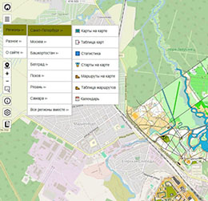
- Регионы - для каждого региона: карты, таблица, статистика, а где есть - календарь, старты, маршруты, закрытые районы, лыжные трассы, клубы;
- Календарь - календари СПб, Москвы, Самары, главных стартов, лыжных гонок и Android-приложение;
- Разное - запросы на рисовку, чемпионаты, авторы-составители, соревнования, документы, правила, книги, неопределённые карты;
- Персонально - персональные и мемориальные страницы;
- О сайте - главная страница, контакты, новости, справка, рекламные баннеры.
Жёлтая кнопка «О проекте» открывает окно с описанием проекта, его задач, способов поддержки,
а также с обращением к авторам и правообладателям карт. Раз в неделю это окно показывается автоматически.
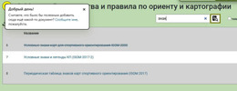
Работа с таблицами
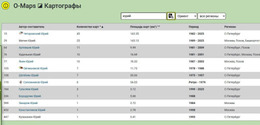
- Сортировка - щелчок по заголовку колонки сортирует таблицу по ней, повторный щелчок меняет направление.
- Фильтры - выпадающие списки в заголовке страницы (регион, тип карт, старт, год и т.п.). Выбранные значения сразу записываются в адрес страницы, поэтому ссылку на отфильтрованную таблицу можно кому-то отправить.
- Поиск - кнопка с лупой (или клавиша «/») открывает строку поиска. В таблице остаются строки, содержащие все введённые слова. Регистр и различие «е/ё» не важны. Enter применяет фильтр сразу, Esc - очищает поиск. Поисковую строку можно передать и в адресе, параметром q: например, все картографы с именем Юрий.
- Скачивание - кнопка
 сохраняет таблицу в CSV-файл.
сохраняет таблицу в CSV-файл. - «На карте» - кнопка
 открывает соответствующую карту,
перенося на неё выбранные в таблице фильтры.
открывает соответствующую карту,
перенося на неё выбранные в таблице фильтры.
Новости
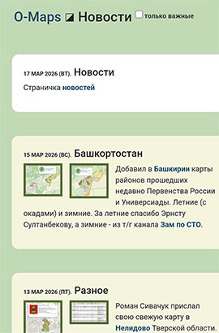 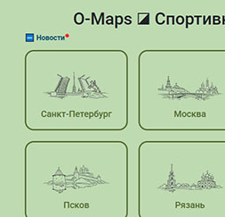
Тёмная тема и мобильные устройства
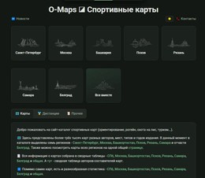
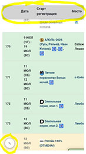
Справочные и архивные разделы
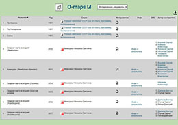
Сканы документов - протоколы результатов, бюллетени, программы, календари и прочие исторические документы. Таблицу можно отфильтровать по периоду (от ранних лет до 2000-х) и по соревнованию, например документы Чемпионатов СССР.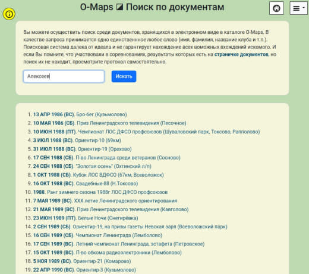
Поиск по документам - поиск по текстам документов каталога. Удобно, например, чтобы найти свои результаты многолетней давности. Поиск не гарантирует нахождения всех вхождений, так что нужный протокол стоит проверить и самостоятельно.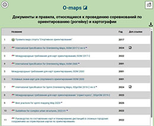
Руководства и правила - документы, относящиеся к проведению соревнований и картографии. Галочка «только на русском» скрывает иноязычные документы.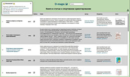
Книги и статьи об ориентировании и картографии, многие - с файлами для скачивания.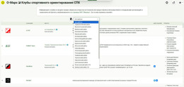
Клубы спортивного ориентирования Петербурга и области - с фильтром по району (параметр district) и поиском. Клубы показаны и на карте СПб в слое POI (ссылка).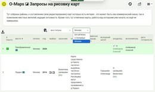
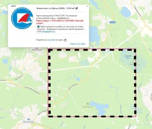
Запросы на рисовку карт - реестр карт, которые составляются, запланированы или нужны: списком (с фильтрами по статусу - «Уже в работе» и «Ищем исполнителя», и по региону) и на карте.- Закрытые районы в СПб и Ленинградской области - районы, закрытые для тренировок и соревнований: списком и на карте.
- Карты с OCAD-файлами - карты, опубликованные вместе с исходным OCAD-файлом, который можно скачать.
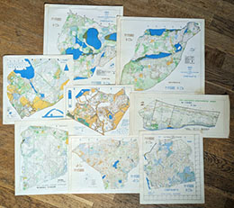
Бумажные карты в наличии - O-Maps дарит карты! В таблице перечислены карты, чистые бумажные экземпляры которых есть в наличии (с количеством копий). Кроме них есть множество других чистых и использованных карт с дистанциями. Если они Вам нужны (например, для занятий с детьми или просто на память), свяжитесь со мной.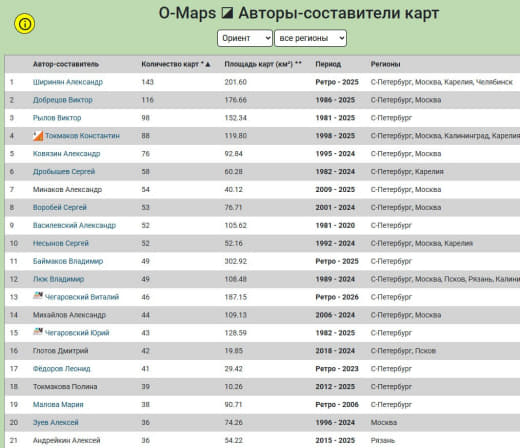
Авторы-составители - сводная таблица картографов: количество и площадь карт, период, регионы, ссылки на карты автора на карте и в таблице. Фильтруется по типу карт и региону.- Карты без известного автора: списком и на карте,
а также
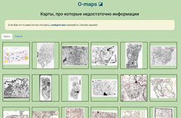
неопределённые карты - карты, про которые недостаточно информации даже для привязки. Если Вам что-то известно о них, сообщите, пожалуйста. - Кубок Коротких Маршрутов - заочные рогейны и фото-рогейны ККМ.
- Персональные и мемориальные страницы: Олеся Мосьпан, Константин Токмаков, Андрей Владимирович Волков.
- TODO - планы развития сайта.
Буду рад предложениям, конструктивной критике и любой помощи. Если Вы видите какие-то недочёты, ошибки, или у Вас есть дополнительная информация о картах, сообщите мне, и я добавлю/исправлю. Если Вам нравится то, что я делаю, Вы можете меня поддержать в любой форме морально или материально - например, переводом на карту 5536 9139 5660 9602 или по номеру телефона +7-921-748-0424 (Т-Банк, ВТБ).